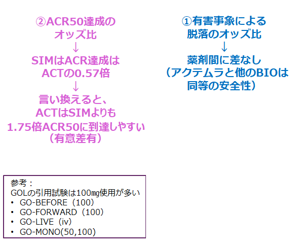
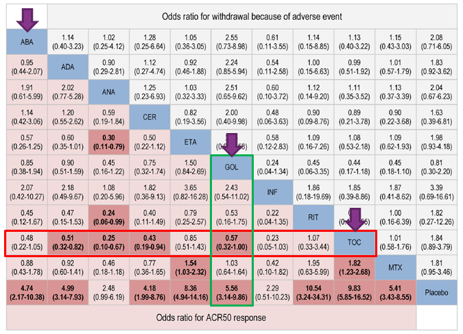

３．SIMはMTXが使用できない場合、単剤で初回から100㎎が使用できます
Bio単剤治療のネットワークメタアナリシス＊の結果、ACT単剤はSIM単剤よりもACR50が高く安全性は同等であった
DMARDs効果不十分RA患者へのBio単独療法の、ベネフィットリスクを検討するため、Bio 単独療法の試験を抽出し、メタアナリシスを行った（＊ネットワークメタ解析： 3つ以上のRCTから構成されるメタアナリシス。異なる薬剤を比較した試験に関しても、一方の薬剤が同じ場合、間接的にもう一方の薬剤同士を比較することを可能とする解析手法。）


Monoメタ解析の結果、SIMは100㎎が多いにもかかわらず、SIMよりもACTの有効性が優れていた
※ANA（アナキンラ）、RIT（リツキサン）は国内適応なし
S. Tarp,et al./Semin Arthritis Rheum. 2016 Sep 14. pii: S0049-0172(16)30270-0